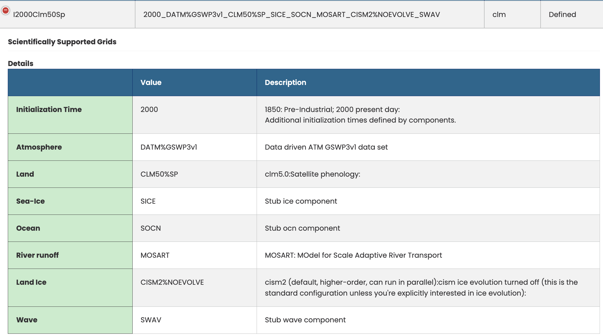

Land#
The land component of CESM is the Community Land Model (CLM), also refered to as the Community Terrestrial Systems Model (CTSM).
It can be useful for people interested in land science to run simulations with only an active land components and atmospheric forcing. In this exercise, you will learn how to run one of these land-only simulations.
This exercise was created by Peter Lawrence, Erik Kluzek and Alice DuVivier.
Learning Goals#
Student will learn what a I compset is, the types of forcing available to run one, and how to run one.
Student will learn how to run a case with satellite phenology and one with prognostic crops and compare the two experiments.
Learn what inputs CLM needs and what they look like.
Exercise Details#
This exercise uses the same code base as the rest of the tutorial.
You will be using the I2000Clm50Sp and IHistClm50BgcCrop compsets at the f09_g17_gl4 resolution.
You will run a control simulation and two experimental simulations.
You will modify netcdf input files.
You will use simple, command line netcdf tools to evaluate how the experiments differ from the control simulation.
Useful CLM references#
What is an I case?#
The I compset has active clm with a data atmosphere. The sea ice, ocean, atmosphere, and wave models are not active. There are two types of options for I compsets:
SP: Satellite Phenology
BGC: Biogeochemistry
We will use the Satellite Phenology option for our control case.

Figure: I2000 compset definition.
Post processing and viewing your output#
You will use ncview and NCO operator tools to evaluate how the experiments differ from the control simulation.
These tools will need to be loaded into your environment using the NCAR HPC modules.
You can create an annual average of the first year’s data for each simulationg using the
ncra(netCDF averager) command from the netCDF operators package (NCO).
ncra $OUTPUT_DIR/*.clm.*nc $CASENAME.cln.h.0001.nc
Create a file that contains differences between each of the experiments and the control simulation
ncdiff i.day5.b.clm2.XXX.nc /glade/scratch/$user/archive/i.day5.a/lnd/hist/i.day5.a.clm2.XXX.nc i_diff.nc
Examine variables within each annual mean and the difference files using
ncview
ncview i_diff.nc
You can also look at other monthly-mean outputs or component log files.